CISCO Configuring Dynamic Routing - Open Shortest Path First (OSPF) Routing
Open Shortest Path First (OSPF) is a link state routing protocol. This means, unlike RIP (which is based on the number of hops)
OSPF uses a link state routing algorithm to understand the wider topology.
OSPF will ultimately gather information from available
routers and construct a network map. The cost metric (what OSPF uses to make its routing decision) is derived from an interfaces bandwidth. A cost is
established using a reference bandwidth of 100mbps.
Therefore, if we have a 20mbps interface the cost is 100/20 = 5. This will be done for all
interfaces across the network within the area. The final point to note is Autonomous System (AS) and areas; in OSPF an AS is simply a collection of
IP networks that all share a routing strategy. An area is a logical group of routers and links that ultimately make up the AS. There can be many areas
in an AS.
Lab setup
- GNS3 as the network emulation software.
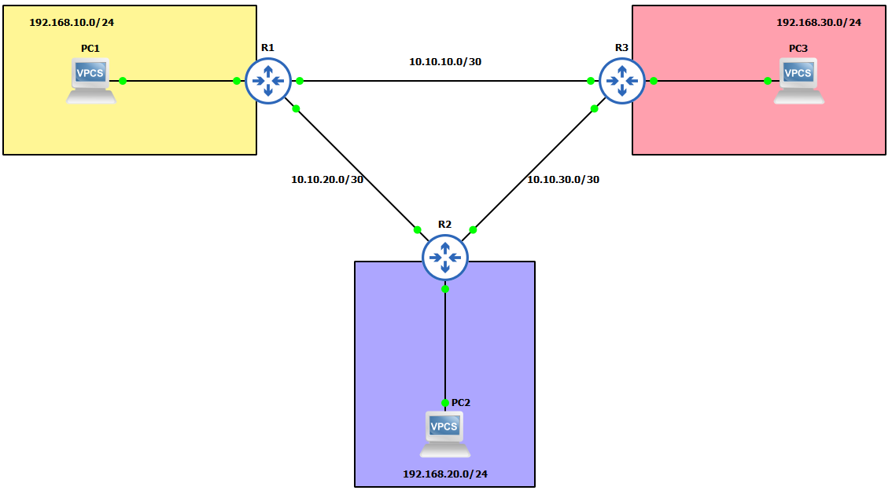
- I have my 3 PC's (Virtual PC's).
- 3x CISCO routers on IOSv 15.7 (Router - Cisco Modelling Labs Personal $199).
IP Schema
The IP schemas used in this lab will be:
- 3x LAN subnets being 192.168.10.0/24, 192.168.20.0/24 and 192.168.30.0/24.
- 3x Router-to-router subnets being 10.10.10.0/30, 10.10.20.0/30 and 10.10.30.0/30.
IP addressing interfaces and Virtual PC's
First, let's IP address the Virtual PC's: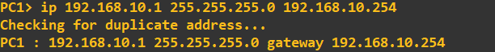
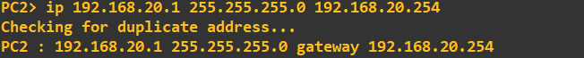
I am now going to IP address the router interfaces attached to each of these LAN's. To make things easier to follow, I have attached interface gi0/0 of each of the routers to the LAN. The address I am going to assign to each of these interfaces is the last address in the subnet.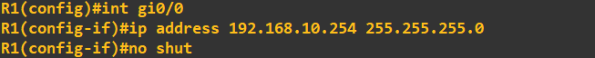
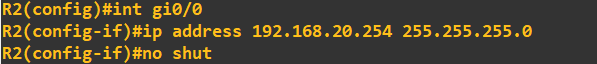
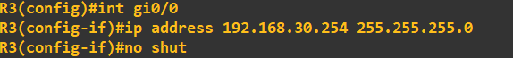
Finally, lets IP address the interfaces connected on the router-to-router links. Router 1: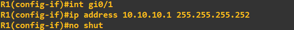
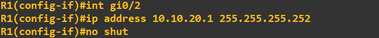
Router 2: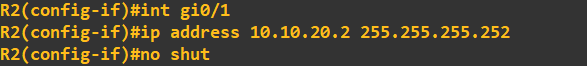
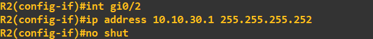
And finally router 3: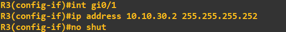
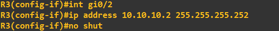
Before we start configuring OSPF, I will do a quick ping check to ensure no connectivity apart from that to default-gateway exists: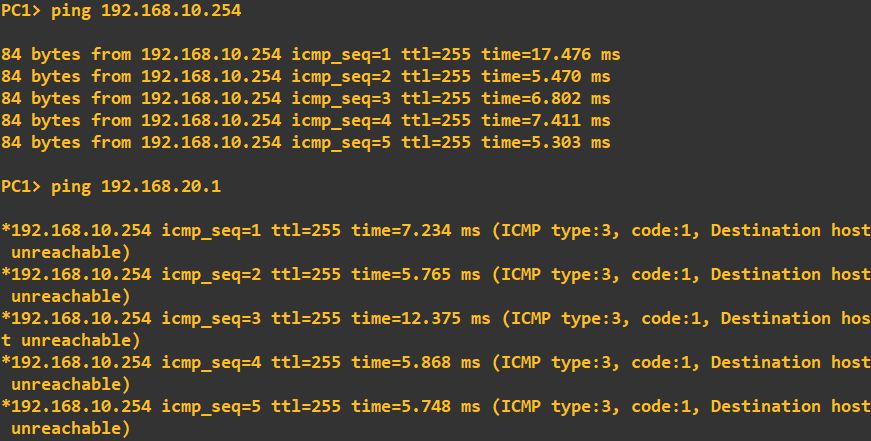
Configuring OSPF
I am going to configure OSPF utilising some authentication (this will help mitigate the injection of rogue OSPF traffic). To do this I am going to use HMAC-SHA-256 in combination with a password. A point to note, depending on what version of OSPF you are using will dictate what type of authentication you can utilise as some versions are restricted to MD5 and plain-text.I am using OSPFv2 which allows for: "The OSPFv2 Cryptographic Authentication feature allows you to configure a key chain on the OSPF interface to authenticate OSPFv2 packets by using HMAC-SHA algorithms. You can use an existing key chain that is being used by another protocol, or you can create a key chain specifically for OSPFv2" - CISCO manual. To define a key chain and key to use, I first to need to create it (I am doing the new few steps on R1, but all routers will need the same configuration to share OSPF information):
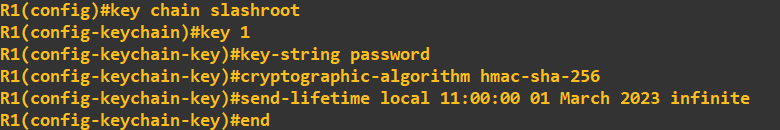
This has created a key chain called 'slashroot' and defined a key 1 with the value 'password'. The algorithm I have chosen as discussed above is SHA-256 with HMAC. The send lifetime defines a period in which the key can be used, in this case from 11:00:00 01 March 2023 with no end time. To confirm it has been accepted I will view the key status: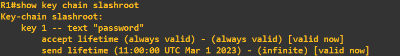
To allow OSPF to use this key chain as its authentication parameter we need to apply it to the interfaces being used by OSPF or alternatively apply the key chain to the OSPF area. We have not defined any areas as of yet so what I am going to do is apply the key chain to the interface: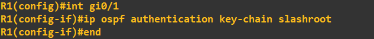
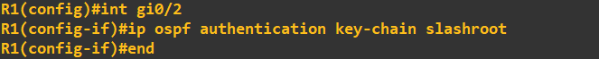
OSPF will now use this key chain for OSPF traffic on that interface. We can check this by looking at our OSPF configuration. Notice how the following command fails at this stage as we have not actually enabled OSPF yet. I will correct this now and enable OSPF routing as well as advertise some networks.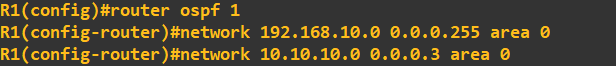
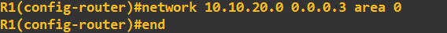
The above commands have done 3 things. 1. It has created an OSPF group 1 (this is information that is relevant locally to the router only). 2. It has advertised 3 networks to an OSPF area of 0 (a logical grouping to share networks, this will need to be shared with other routers in the area). 3. Enabled OSPF. To check our OSPF configuration we should be able to type the same command as above and receive an output: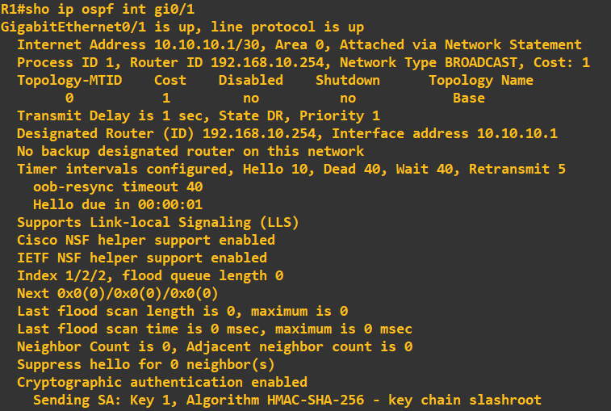
You will notice at the bottom of the configuration our key chain is displayed as confirmation it is being utilised. It is worth having a look at the settings before moving on to ensure you fully understand what is going on - in particular the timings of Hello, Dead, Wait and Retransmit. The Hello message uses multicast address 224.0.0.5, is sent every 10 seconds and has the purpose of identifying OSPF neighbours. You can see this in Wiseshark when looking at the line connected to an OSPF enabled interface: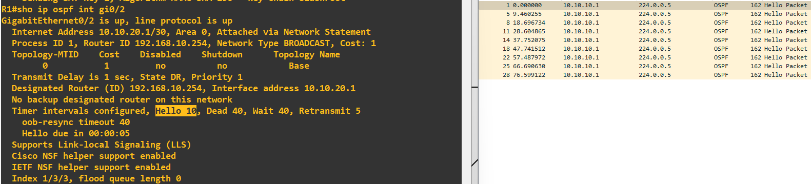
All we need to do at this stage is put the same configuration information into each of the other two routers (advertising their respective networks). I do this next on router 2: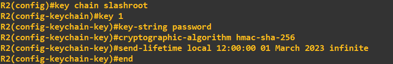
Apply the key chain to OSPF authentication on the interfaces: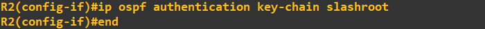
And finally advertise some networks: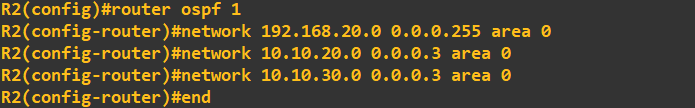
The first thing you will notice after entering a configuration on another router is a status message will pop-up: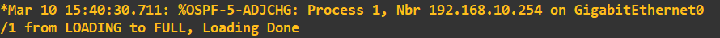
What this is telling us, is that an OSPF neighbour partnership has been estbalished with the router ID 192.168.10.254. This is router 1. We just didn't change the router ID when we set OSPF up so it auto populated this with the first interfaces ID on R1 i.e. 192.168.10.254. We can view OSPF neighbours using the following command: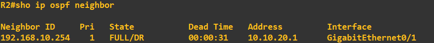
The final step is to complete the topology and enter the same configuration into router 3. Once done, we can view the neighbour relationships on router 3 to see the following: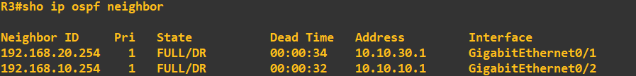
We can also view the routes that router 3 now knows through OSPF using the following command: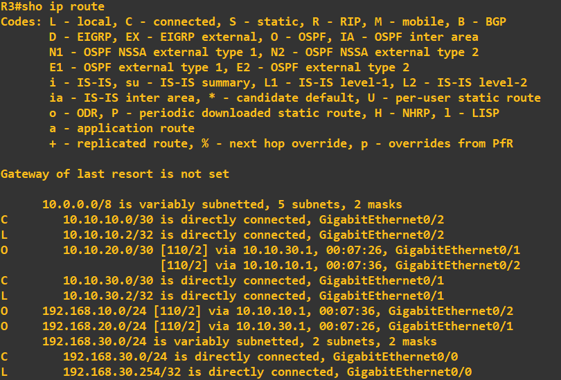
It worth checking what all this looks like in Wireshark to fully understand the OSPF messaging. Here you can see the 'update' and 'description' messages being transmitted between router 1 and router 3: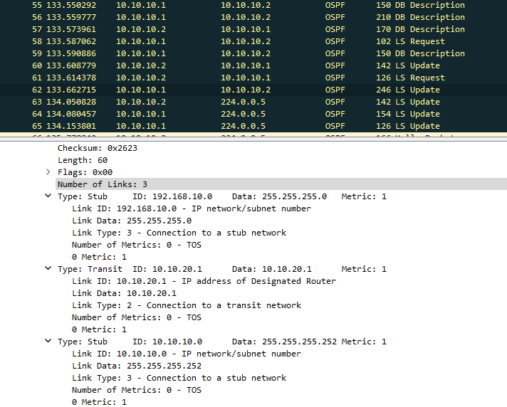
At this point we should be ready to go. As a final check I will ping the 192.168.20.0/24 and 192.168.30.0/24 networks from PC1, which is in the 192.168.10.0/24 network: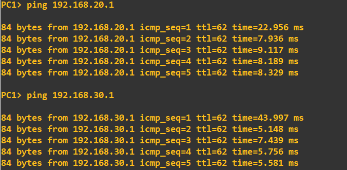